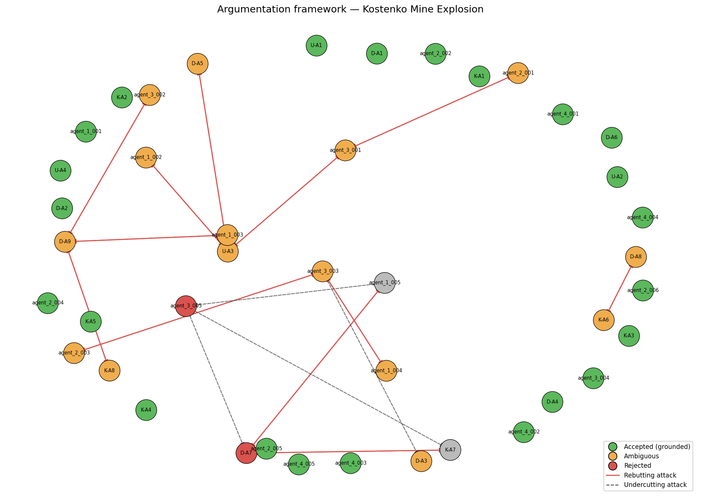

Date of incident: 2023-10-28
Run ID: kostenko_v6_20260515_144020_680602
The Kostenko Mine Explosion occurred on October 28, 2023, at the ArcelorMittal Temirtau mine in Kazakhstan. The incident involved a fire and subsequent explosion, resulting in casualties and damage [U-A1, K-A1, D-A1]. The investigation was conducted by a team of experts, including Usembekov Meiramбек Sabdenovich (U), Kolikov-Meshcheryakov Joint Expert Conclusion (K), and DMT GmbH & Co. KG (D) [U, K, D]. The team examined the case metadata, expert sources, and v2 classification to determine the cause of the accident.
The primary accident type was classified as a methane explosion, with secondary types including underground gas fire [TC-01, TC-02]. The dominant cause categories driving this classification include methane accumulation and mechanical ignition source [TC-01, TC-02] [D-A1, K-A2, U-A3]. The top-ranked precedent match was PREC-2021-04, Shakhta Listvyazhnaya, with a Jaccard overlap score of 0.0909 and shared cause categories including methane accumulation [TC-01] [PREC-2021-04].
The accepted conclusions include the ignition source, which was likely mechanical sparking from the armored face conveyor (AFC) chain [K-A4, agent_1_002, SUP-V5-011]. The methane source was the K2 companion seam, released into the sub-conveyor zone of the upper longwall by abutment-pressure-induced fracturing [K-A2, agent_1_001, SUP-V5-008]. Spontaneous combustion was excluded as a cause [U-A2, K-A3, D-A4, SUP-V5-001]. The ventilation system met design flow rates, but the combined scheme created a low-velocity sub-conveyor zone where methane accumulated [D-A3, agent_1_004, SUP-V5-018].
The rejected hypotheses include the angle grinder as the ignition source, which was defeated by K-A4 and agent_1_002 [ATK-V5-003, ATK-V5-004]. The hypothesis that the explosion was driven primarily by coal dust was also rejected, as the evidence supports a primary methane explosion with a secondary coal dust contribution [K-A8, agent_1_003, ATK-V5-011].
The genuinely contested arguments include the exact sequence of explosion propagation through the mine [D-A7, agent_1_005, ATK-V5-015]. The open questions from the original investigators include whether the shearer was operating at the time of ignition and what the actual CH4 concentration distribution was in the goaf and crosscut 13 immediately before the explosion [OQ-1, OQ-3].

Node colors: green = accepted (grounded extension), orange = ambiguous (in some preferred extension but not all), red = rejected (in no preferred extension). Edges: solid red = rebutting attack, dashed = undercutting attack.
The regulatory findings include violations of REG-01 (methane monitoring limits and automatic cutoff), REG-02 (ventilation scheme design and airflow requirements), and REG-03 (degasification of companion seams) [agent_4_001, agent_4_002, agent_4_003]. The mine failed to comply with these regulations, contributing to the accident. The violations were causally significant, as compliance would have prevented or mitigated the accident.
| Metric | Value |
|---|---|
| combined_arguments | 42 |
| expert_arguments | 21 |
| agent_arguments | 21 |
| attacks_detected | 28 |
| supports_detected | 25 |
| accepted | 23 |
| ambiguous | 15 |
| rejected | 2 |
| preferred_extensions | 24 |
_Reproducible from run artifacts in runs/kostenko_v6_20260515_144020_680602/._